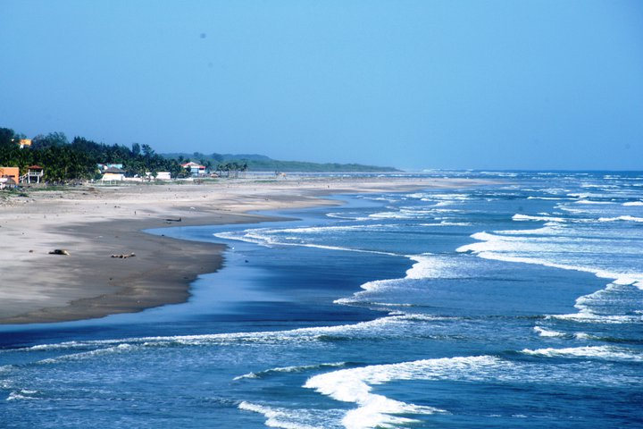

La Libertad es un departamento de El Salvador que se ubica en la zona central del país. Sus límites geográficos son los siguientes: Al norte con Chalatenango, al este con San Salvador, al sureste con La Paz, al sur con el Océano Pacífico; al oeste con Sonsonate y al noreste con Santa Ana.
Fue creado como departamento el 28 de enero de 1865, mediante Decreto Legislativo emitido durante la administración del doctor Francisco Dueñas.
La extensión territorial de La Libertad es de 1,652.88 kilómetros cuadrados y posee una población de unos 445,000 habitantes, según el censo poblacional de 2007.
Su área geográfica cubre desde ruinas prehispánicas, así como edificaciones coloniales, poblaciones determinantes para la historia del país, las más fértiles zonas agrícolas y hermosas playas.
| Info 1 | Info 2 |
|---|---|
 |
El Puerto de La Libertad es un destino turístico por excelencia con mucha historia desde la colonia, fue el primer puerto en El Salvador, acá un poco de historia: Esta región fue mencionada por Pedro Cortez a mediados del siglo 18, era conocida por ser parte de una hacienda antes de ser habilitada como Puerto de La Libertad en 1824 por parte de la República Federal de Centro América el cual también autorizo el comercio exterior en el litoral pacífico en 1831, el primer buque de vapor arribo en 1857, treinta años después fue autorizada la construcción del primer muelle y obtuvo su título de villa, y hasta casi cien años después en 1957 el titulo de ciudad. |
|  | La combinación de buen clima y tiempo libre son perfectas para irse a la playa una de las mas visitadas por turistas locales es playa El Majahual, en La Libertad, es una de las mas populares del país (El Salvador) debido a su cercanía con la capital su oleaje amigable y gentil permite a los veraneantes gozar y divertirse en grande en compañía de la familia y amigos. |